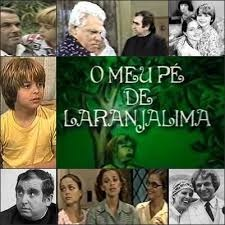
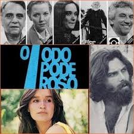

Nossa História
O Sítio Serra Bonita nasceu do sonho de dois educadores apaixonados pela natureza e pela cultura brasileira.
Maria Nérea Cortellazzi Rampim
Professora e poetisa. Nasceu em Capivari, em 1922. Filha de José Cortellazzi e de Maria Antonia Belomo Cortellazzi. Casou-se em 1946, com o professor Luiz Rampim, tendo o casal os filhos Daniel e Maria Aparecida.
Utilizou-se de alguns pseudônimos para identificar a autoria de seus trabalhos poéticos: M. Nérea, Virgína de Lande e Flor de Agreste. Publicou o livro “Férias de Dezembro” (poesias), Editora Santo Antônio.
Em São Lourenço da Serra-SP, há uma escola municipal que leva o seu nome. Faleceu em 2000, aos 78 anos de idade.
E. E. Maria Nérea Rampim
Legado na Educação
A Escola Municipal foi fundada em homenagem a Maria Nérea C. Rampim, situada em São Lourenço da Serra, SP. É uma instituição de ensino fundamental com mais de 20 anos de atuação, fundada em 2002.
A escola atende anos iniciais, EJA e conta com pátio e quadra, com atividades como o Dia do Desafio. Possui quadra esportiva, internet banda larga, pátio coberto e alimentação.
Contando com parcerias em atividades educativas com o SESI/SESC, a escola é ativa na comunidade local, realizando eventos como o "Dia do Desafio" e formaturas com o apoio da prefeitura de São Lourenço da Serra.
Um Cenário de Novelas

Meu Pé de Laranja Lima
Baseada no romance de José Mauro de Vasconcelos, foi produzida pela Band. A história de Zezé, o menino que encontra companheirismo em um pé de laranja lima, teve várias cenas gravadas nos jardins e caminhos do sítio.

O Todo Poderoso
Produzida pela TV Tupi, esta novela também utilizou as paisagens naturais e a arquitetura rústica do sítio como cenário. A produção trouxe visibilidade nacional para São Lourenço da Serra.
Antes de ser o paraíso que é hoje, o espaço funcionou como uma fábrica de olaria, produzindo tijolos e telhas que ajudaram a construir a região.